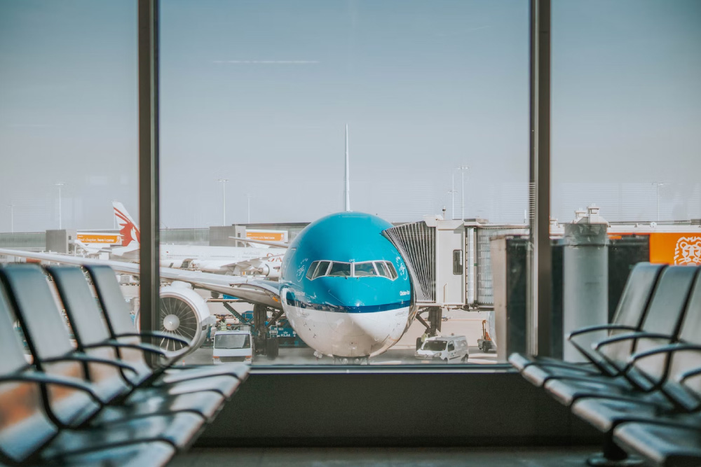

Notícia 1
Publicado dia 01/03/2026 14h06

Após os ataques dos Estados Unidos e Israel ao Irã, que resultaram em retaliações iranianas com drones contra alvos nos Emirados Árabes Unidos e Catar, o fechamento do espaço aéreo na região afetou diretamente os voos entre Brasil e Oriente Médio. Pelo menos 13 voos foram impactados, incluindo cinco cancelamentos no Aeroporto Tom Jobim, no Rio de Janeiro. As companhias Emirates e Qatar Airways, que operam no Brasil, suspenderam temporariamente suas rotas: a Emirates interrompeu todas as operações para Dubai até segunda-feira, enquanto a Qatar suspendeu os voos para Doha até que o espaço aéreo seja reaberto. Globalmente, mais de 1.800 voos foram cancelados desde os ataques, deixando milhares de passageiros retidos em aeroportos da região.
Notícia 2
Publicado dia 02/03/2026 05h34

O ataque coordenado dos Estados Unidos e de Israel contra o Irã, ocorrido no sábado (28), deixou 555 mortos e ao menos 747 feridos, segundo a organização humanitária Crescente Vermelho. Até agora, 131 cidades iranianas foram atingidas. O presidente americano Donald Trump anunciou que o líder supremo do Irã, aiatolá Ali Khamenei, foi morto nos bombardeios, informação confirmada posteriormente pelo próprio regime iraniano. Explosões foram registradas em Teerã e em diversas outras cidades, e em resposta o Irã lançou mísseis contra Israel e atacou bases americanas em países como Catar, Emirados Árabes, Kuwait e Bahrein. O governo dos EUA declarou que os danos às suas bases foram “mínimos”. Além disso, o Estreito de Ormuz, rota estratégica para o transporte de petróleo, foi fechado por razões de segurança. Este é o segundo ataque americano ao Irã em menos de um ano, já que em junho de 2025 os EUA haviam bombardeado instalações nucleares iranianas. O episódio ocorre em meio a negociações sobre o programa nuclear iraniano, que Washington acusa de ter como objetivo a fabricação de uma bomba atômica.
Notícia 3
Publicado dia